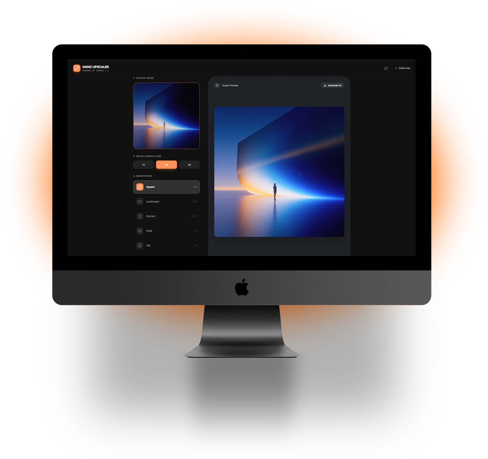
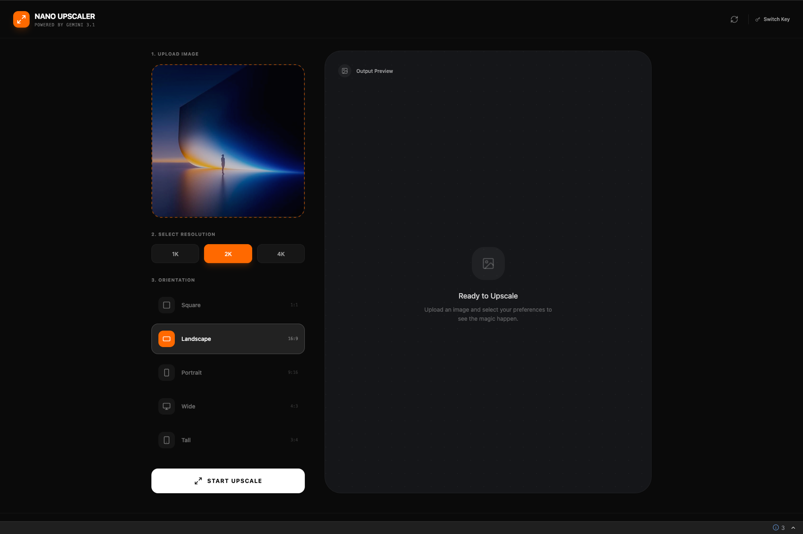
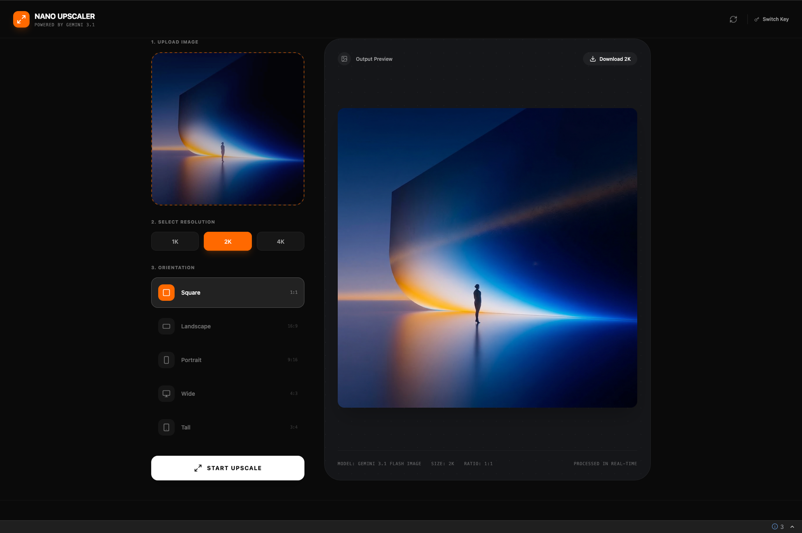
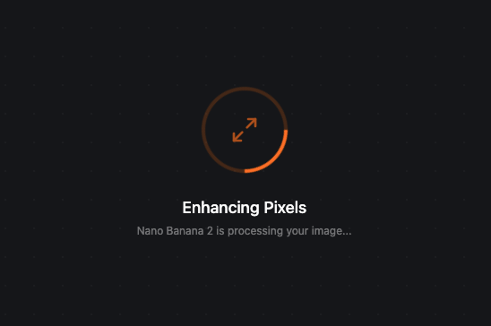

AI Micro-Service · Workflow Compression · Solo Build
Nano Upscaler
I did not design another image editor. I designed a faster decision system for visual asset prep.
A focused AI micro-service that turns low-quality source images into production-ready assets with explicit control over resolution and aspect ratio. From workflow bottleneck to live product in one sprint.

I Found the Same Asset-Rescue Loop Hiding in Every Creative Workflow
Low-quality source images quietly break a surprising amount of digital work. A presentation looks weak, a landing page feels cheap, a thumbnail underperforms—and the team loses time jumping between tools to make one asset usable.
The pain was not lack of creative tools. The pain was a fragmented multi-tool recovery workflow that repeated across every project—screenshots, old files, compressed sources, client scraps, chat exports.
I Mapped the Asset-Recovery Pipeline Nobody Had Productized
I ran a workflow audit across my own creative production tasks: presentations, landing pages, social media assets, video thumbnails, ad campaigns. Every workflow followed the same pattern—and the bottleneck was always the image rescue step.
Discovery confirmed: users needed explicit output control (not magic), the task was short enough for a single screen, and combining upscale + reframe into one action would eliminate the multi-tool shuffle entirely.
Deliverables- Workflow audit across 5 creative production contexts
- Jobs-to-be-done definition: “Turn weak source image into usable asset at the right size, right now”
- Competitive review of online upscalers, AI enhancers, and heavyweight editors
- Gap analysis: “powerful but heavy” vs. “fast but shallow”
I Defined the MVP by What I Deliberately Excluded
The product could easily become another overloaded editing tool. I rejected that path and narrowed the scope to three user decisions: source image, target resolution, target orientation.
- MVP scope definition with explicit exclusion rationale
- Three-decision interaction model: source, resolution, orientation
- JTBD: “When I have a low-quality image and need it usable now, help me turn it into a production-ready asset with control over the final format”
I Built the Interface Around Three Explicit Decisions, Not Hidden Settings
I designed a single-screen split workspace: control panel on the left, output preview on the right. Every important choice is visible, every stage has a clear state.
The dark interface keeps attention on the imagery, not the chrome. Control blocks are styled as distinct decision groups—numbered steps that guide without explaining.
- Single-screen split layout with explicit 3-step flow
- Dark UI with orange accent for active states and CTA
- Loading state with progress indicator and model attribution
- Full-screen output preview with one-click download
- API key gate and switch path for cost transparency

I Designed the AI Layer So Users Control the Output, Not the Model
Most AI upscaling tools hide everything behind a single “enhance” button. I took the opposite approach—exposing production-relevant controls while hiding model complexity.
The user chooses resolution and aspect ratio. The system translates those choices into the right Gemini API parameters, handles the generation, and returns a result that fits the downstream use case exactly.
- Gemini API integration with parameter mapping from user selections
- Visible processing state with model attribution (“Nano Banana 2 is processing”)
- API key management UI with switch path for cost awareness
- Error handling for model failures, rate limits, and invalid inputs


From Workflow Pain to Shipped Product in One Sprint
I Compressed a Multi-Tool Rescue Workflow Into One Focused Action
The product replaced a fragmented multi-tool workflow with a single focused action. Users go from weak source image to production-ready asset in seconds—with full control over the output format instead of trusting a black box.
What This Project Taught Me About AI Product Design
Before/after comparison slider for quality validation. Batch mode for studio workflows processing multiple assets.
Preset memory by use case so teams can save their common output configurations.
Single-image processing only—no batch mode yet. No output history or versioning.
Export limited to image format—YAML/JSON metadata export planned for asset management integration.
I Used AI as Workflow Infrastructure, Not as Visual Hype
This project is AI-native in two ways: Gemini powers the core product feature (image upscaling and reframing), and Google AI Studio accelerated the entire build from concept to working product.
If I Can Turn a Workflow Bottleneck Into a Shipped AI Micro-Service Solo, Imagine What I Can Build for Your Team
I design and ship focused AI tools end-to-end—from opportunity framing to live deployment.